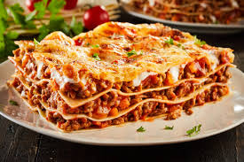

Lasagna Recipe
Lasagna
Home

Description
This lasagna recipe layers tender pasta with a rich tomato sauce, seasoned ground meat, and a creamy ricotta micture, all topped with golden, melted mozzarella. Baked until bubbly and perfectly set, it delivers a hearty balance of flavors in every bite. Simple to prepare yet impressive on the table, this dish is a perfect for family dinners or gatherings, offering both comfort and tradition in one warm, satisfying meal.
Ingredients
- 12 Lasagna noodles
- 1 lb Ground Beef (or italian sausage)
- 1 medium onion, diced
- 3 garlic cloves, minced
- 1 (28 oz) can crushed tomatoes
- 2 (6 oz) cans tomato paste
- 2 (15 oz) cans tomato sauce
- 2 teaspoons sugar
- 2 teaspoons dried basil
- 1 teaspoon dried oregano
- 1/2 teaspoon salt
- 1/2 teaspoon black pepper
- 2 tablespoons fresh parsley, chopped (or 1 tablespoon dried)
- 15 oz ricotta cheese
- 1 large egg
- 3 cups shredded mozzarella cheese
- 3/4 grated parmasean cheese